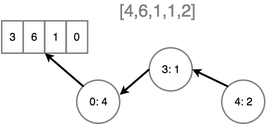

Functional-Light JavaScript
Chapter 6: Value Immutability
In Chapter 5, we talked about the importance of reducing side causes/effects: the ways that your application's state can change unexpectedly and cause surprises (bugs). The fewer places we have with such landmines, the more confidence we have over our code, and the more readable it will be. Our topic for this chapter follows directly from that same effort.
If programming-style idempotence is about defining a value change operation so that it can only affect state once, we now turn our attention to the goal of reducing the number of change occurrences from one to zero.
Let's now explore value immutability, the notion that in our programs we use only values that cannot be changed.
Primitive Immutability
Values of the primitive types (number, string, boolean, null, and
undefined) are already immutable; there's nothing you can do to change them:
// invalid, and also makes no sense
2 = 2.5;
However, JS does have a peculiar behavior which seems like it allows mutating
such primitive type values: "boxing". When you access a property on certain
primitive type values -- specifically number, string, and boolean -- under
the covers JS automatically wraps (aka "boxes") the value in its object
counterpart (Number, String, and Boolean, respectively).
Consider:
var x = 2;
x.length = 4;
x; // 2
x.length; // undefined
Numbers do not normally have a length property available, so the
x.length = 4 setting is trying to add a new property, and it silently fails
(or is ignored/discarded, depending on your point-of-view); x continues to
hold the simple primitive 2 number.
But the fact that JS allows the x.length = 4 statement to run at all can seem
troubling, if for no other reason than its potential confusion to readers. The
good news is, if you use strict mode ("use strict";), such a statement will
throw an error.
What if you try to mutate the explicitly boxed object representation of such a value?
var x = new Number(2);
// works fine
x.length = 4;
x in this snippet is holding a reference to an object, so custom properties
can be added and changed without issue.
The immutability of simple primitives like numbers probably seems fairly
obvious. But what about string values? JS developers have a very common
misconception that strings are like arrays and can thus be changed. JS syntax
even hints at them being "array like" with the [ ] access operator. However,
strings are also immutable:
var s = "hello";
s[1]; // "e"
s[1] = "E";
s.length = 10;
s; // "hello"
Despite being able to access s[1] like it's an array, JS strings are not real
arrays. Setting s[1] = "E" and s.length = 10 both silently fail, just as
x.length = 4 did before. In strict mode, these assignments will fail, because
both the 1 property and the length property are read-only on this primitive
string value.
Interestingly, even the boxed String object value will act (mostly) immutable
as it will throw errors in strict mode if you change existing properties:
"use strict";
var s = new String("hello");
s[1] = "E"; // error
s.length = 10; // error
s[42] = "?"; // OK
s; // "hello"
Value to Value
We'll unpack this idea more throughout the chapter, but just to start with a clear understanding in mind: value immutability does not mean we can't have values change over the course of our program. A program without changing state is not a very interesting one! It also doesn't mean that our variables can't hold different values. These are all common misconceptions about value immutability.
Value immutability means that when we need to change the state in our program, we must create and track a new value rather than mutate an existing value.
For example:
function addValue(arr) {
var newArr = [...arr, 4];
return newArr;
}
addValue([1, 2, 3]); // [1,2,3,4]
Notice that we did not change the array that arr references, but rather
created a new array (newArr) that contains the existing values plus the new
4 value.
Analyze addValue(..) based on what we discussed in Chapter 5
about side causes/effects. Is it pure? Does it have referential transparency?
Given the same array, will it always produce the same output? Is it free of both
side causes and side effects? Yes.
Imagine the [1,2,3] array represents a sequence of data from some previous
operations and we stored in some variable. It is our current state. If we want
to compute what the next state of our application is, we call addValue(..).
But we want that act of next-state computation to be direct and explicit. So the
addValue(..) operation takes a direct input, returns a direct output, and
avoids the side effect of mutating the original array that arr references.
This means we can calculate the new state of [1,2,3,4] and be fully in control
of that transition of states. No other part of our program can unexpectedly
transition us to that state early, or to another state entirely, like
[1,2,3,5]. By being disciplined about our values and treating them as
immutable, we drastically reduce the surface area of surprise, making our
programs easier to read, reason about, and ultimately trust.
The array that arr references is actually mutable. We just chose not to mutate
it, so we practiced the spirit of value immutability.
We can use the copy-instead-of-mutate strategy for objects, too. Consider:
function updateLastLogin(user) {
var newUserRecord = Object.assign({}, user);
newUserRecord.lastLogin = Date.now();
return newUserRecord;
}
var user = {
// ..
};
user = updateLastLogin(user);
Non-Local
Non-primitive values are held by reference, and when passed as arguments, it's the reference that's copied, not the value itself.
If you have an object or array in one part of the program, and pass it to a function that resides in another part of the program, that function can now affect the value via this reference copy, mutating it in possibly unexpected ways.
In other words, if passed as arguments, non-primitive values become non-local. Potentially the entire program has to be considered to understand whether such a value will be changed or not.
Consider:
var arr = [1, 2, 3];
foo(arr);
console.log(arr[0]);
Ostensibly, you're expecting arr[0] to still be the value 1. But is it? You
don't know, because foo(..) might mutate the array using the reference copy
you pass to it.
We already saw a trick in the previous chapter to avoid such a surprise:
var arr = [1, 2, 3];
foo([...arr]); // ha! a copy!
console.log(arr[0]); // 1
In a little bit, we'll see another strategy for protecting ourselves from a value being mutated out from underneath us unexpectedly.
Reassignment
How would you describe what a "constant" is? Think about that for a moment before you move on to the next paragraph.
* * * *
Some of you may have conjured descriptions like, "a value that can't change", "a variable that can't be changed", or something similar. These are all approximately in the neighborhood, but not quite at the right house. The precise definition we should use for a constant is: a variable that cannot be reassigned.
This nitpicking is really important, because it clarifies that a constant actually has nothing to do with the value, except to say that whatever value a constant holds, that variable cannot be reassigned any other value. But it says nothing about the nature of the value itself.
Consider:
var x = 2;
Like we discussed earlier, the value 2 is an unchangeable (immutable)
primitive. If I change that code to:
const x = 2;
The presence of the const keyword, known familiarly as a "constant
declaration", actually does nothing at all to change the nature of 2; it's
already unchangeable, and it always will be.
It's true that this later line will fail with an error:
// try to change `x`, fingers crossed!
x = 3; // Error!
But again, we're not changing anything about the value. We're attempting to
reassign the variable x. The values involved are almost incidental.
To prove that const has nothing to do with the nature of the value, consider:
const x = [2];
Is the array a constant? No. x is a constant because it cannot be
reassigned. But this later line is totally OK:
x[0] = 3;
Why? Because the array is still totally mutable, even though x is a constant.
The confusion around const and "constant" only dealing with assignments and
not value semantics is a long and dirty story. It seems a high degree of
developers in just about every language that has a const stumble over the same
sorts of confusions. Java in fact deprecated const and introduced a new
keyword final at least in part to separate itself from the confusion over
"constant" semantics.
Setting aside the confusion detractions, what importance does const hold for
the FPer, if not to have anything to do with creating an immutable value?
Intent
The use of const tells the reader of your code that that variable will not
be reassigned. As a signal of intent, const is often highly lauded as a
welcome addition to JavaScript and a universal improvement in code readability.
In my opinion, this is mostly hype; there's not much substance to these claims.
I see only the mildest of faint benefit in signaling your intent in this way.
And when you match that up against decades of precedent around confusion about
it implying value immutability, I don't think const comes close to carrying
its own weight.
To back up my assertion, let's consider scope. const creates a block scoped
variable, meaning that variable only exists in that one localized block:
// lots of code
{
const x = 2;
// a few lines of code
}
// lots of code
Typically, blocks are considered best designed to be only a few lines long. If
you have blocks of more than say 10 lines, most developers will advise you to
refactor. So const x = 2 only applies to those next nine lines of code at
most.
No other part of the program can ever affect the assignment of x. Period.
My claim is that program has basically the same magnitude of readability as this one:
// lots of code
{
let x = 2;
// a few lines of code
}
// lots of code
If you look at the next few lines of code after let x = 2;, you'll be able to
easily tell that x is in fact not reassigned. That to me is a much
stronger signal -- actually not reassigning it! -- than the use of some
confusable const declaration to say "won't reassign it".
Moreover, let's consider what this code is likely to communicate to a reader at first glance:
const magicNums = [1, 2, 3, 4];
Isn't it at least possible (probable?) that the reader of your code will assume
(wrongly) that your intent is to never mutate the array? That seems like a
reasonable inference to me. Imagine their confusion if later you do in fact
allow the array value referenced by magicNums to be mutated. Might that
surprise them?
Worse, what if you intentionally mutate magicNums in some way that turns out
to not be obvious to the reader? Subsequently in the code, they see a usage of
magicNums and assume (again, wrongly) that it's still [1,2,3,4] because they
read your intent as, "not gonna change this".
I think you should use var or let for declaring variables to hold values
that you intend to mutate. I think that actually is a much clearer signal of
your intent than using const.
But the troubles with const don't stop there. Remember we asserted at the top
of the chapter that to treat values as immutable means that when our state needs
to change, we have to create a new value instead of mutating it? What are you
going to do with that new array once you've created it? If you declared your
reference to it using const, you can't reassign it.
const magicNums = [1, 2, 3, 4];
// later:
magicNums = magicNums.concat(42); // oops, can't reassign!
So... what next?
In this light, I see const as actually making our efforts to adhere to FP
harder, not easier. My conclusion: const is not all that useful. It creates
unnecessary confusion and restricts us in inconvenient ways. I only use const
for simple constants like:
const PI = 3.141592;
The value 3.141592 is already immutable, and I'm clearly signaling, "this PI
will always be used as stand-in placeholder for this literal value." To me,
that's what const is good for. And to be frank, I don't use many of those
kinds of declarations in my typical coding.
I've written and seen a lot of JavaScript, and I just think it's an imagined problem that very many of our bugs come from accidental reassignment.
One of the reasons FPers so highly favor const and avoid reassignment is
because of equational reasoning. Though this topic is more related to other
languages than JS and goes beyond what we'll get into here, it is a valid point.
However, I prefer the pragmatic view over the more academic one.
For example, I've found measured use of variable reassignment can be useful in simplifying the description of intermediate states of computation. When a value goes through multiple type coercions or other transformations, I don't generally want to come up with new variable names for each representation:
var a = "420";
// later
a = Number(a);
// later
a = [a];
If after changing from "420" to 420, the original "420" value is no longer
needed, then I think it's more readable to reassign a rather than come up with
a new variable name like aNum.
The thing we really should worry more about is not whether our variables get reassigned, but whether our values get mutated. Why? Because values are portable; lexical assignments are not. You can pass an array to a function, and it can be changed without you realizing it. But a reassignment will never be unexpectedly caused by some other part of your program.
It's Freezing in Here
There's a cheap and simple way to turn a mutable object/array/function into an "immutable value" (of sorts):
var x = Object.freeze([2]);
The Object.freeze(..) utility goes through all the properties/indices of an
object/array and marks them as read-only, so they cannot be reassigned. It's
sorta like declaring properties with a const, actually! Object.freeze(..)
also marks the properties as non-reconfigurable, and it marks the object/array
itself as non-extensible (no new properties can be added). In effect, it makes
the top level of the object immutable.
Top level only, though. Be careful!
var x = Object.freeze([2, 3, [4, 5]]);
// not allowed:
x[0] = 42;
// oops, still allowed:
x[2][0] = 42;
Object.freeze(..) provides shallow, naive immutability. You'll have to walk
the entire object/array structure manually and apply Object.freeze(..) to each
sub-object/array if you want a deeply immutable value.
But contrasted with const which can confuse you into thinking you're getting
an immutable value when you aren't, Object.freeze(..) actually gives you an
immutable value.
Recall the protection example from earlier:
var arr = Object.freeze([1, 2, 3]);
foo(arr);
console.log(arr[0]); // 1
Now arr[0] is quite reliably 1.
This is so important because it makes reasoning about our code much easier when we know we can trust that a value doesn't change when passed somewhere that we do not see or control.
Performance
Whenever we start creating new values (arrays, objects, etc.) instead of mutating existing ones, the obvious next question is: what does that mean for performance?
If we have to reallocate a new array each time we need to add to it, that's not only churning CPU time and consuming extra memory; the old values (if no longer referenced) are also being garbage collected. That's even more CPU burn.
Is that an acceptable trade-off? It depends. No discussion or optimization of code performance should happen without context.
If you have a single state change that happens once (or even a couple of times) in the whole life of the program, throwing away an old array/object for a new one is almost certainly not a concern. The churn we're talking about will be so small -- probably mere microseconds at most -- as to have no practical effect on the performance of your application. Compared to the minutes or hours you will save not having to track down and fix a bug related to unexpected value mutation, there's not even a contest here.
Then again, if such an operation is going to occur frequently, or specifically happen in a critical path of your application, then performance -- consider both performance and memory! -- is a totally valid concern.
Think about a specialized data structure that's like an array, but that you want to be able to make changes to and have each change behave implicitly as if the result was a new array. How could you accomplish this without actually creating a new array each time? Such a special array data structure could store the original value and then track each change made as a delta from the previous version.
Internally, it might be like a linked-list tree of object references where each node in the tree represents a mutation of the original value. Actually, this is conceptually similar to how Git version control works.

In this conceptual illustration, an original array [3,6,1,0] first has the
mutation of value 4 assigned to position 0 (resulting in [4,6,1,0]), then
1 is assigned to position 3 (now [4,6,1,1]), finally 2 is assigned to
position 4 (result: [4,6,1,1,2]). The key idea is that at each mutation,
only the change from the previous version is recorded, not a duplication of the
entire original data structure. This approach is much more efficient in both
memory and CPU performance, in general.
Imagine using this hypothetical specialized array data structure like this:
var state = specialArray(4, 6, 1, 1);
var newState = state.set(4, 2);
state === newState; // false
state.get(2); // 1
state.get(4); // undefined
newState.get(2); // 1
newState.get(4); // 2
newState.slice(2, 5); // [1,1,2]
The specialArray(..) data structure would internally keep track of each
mutation operation (like set(..)) as a diff, so it won't have to reallocate
memory for the original values (4, 6, 1, and 1) just to add the 2
value to the end of the list. But importantly, state and newState point at
different versions (or views) of the array value, so the value immutability
semantic is preserved.
Inventing your own performance-optimized data structures is an interesting
challenge. But pragmatically, you should probably use a library that already
does this well. One great option is
Immutable.js, which provides a variety
of data structures, including List (like array) and Map (like object).
Consider the previous specialArray example but using Immutable.List:
var state = Immutable.List.of(4, 6, 1, 1);
var newState = state.set(4, 2);
state === newState; // false
state.get(2); // 1
state.get(4); // undefined
newState.get(2); // 1
newState.get(4); // 2
newState.toArray().slice(2, 5); // [1,1,2]
A powerful library like Immutable.js employs sophisticated performance optimizations. Handling all the details and corner-cases manually without such a library would be quite difficult.
When changes to a value are few or infrequent and performance is less of a
concern, I'd recommend the lighter-weight solution, sticking with built-in
Object.freeze(..) as discussed earlier.
Treatment
What if we receive a value to our function and we're not sure if it's mutable or immutable? Is it ever OK to just go ahead and try to mutate it? No. As we asserted at the beginning of this chapter, we should treat all received values as immutable -- to avoid side effects and remain pure -- regardless of whether they are or not.
Recall this example from earlier:
function updateLastLogin(user) {
var newUserRecord = Object.assign({}, user);
newUserRecord.lastLogin = Date.now();
return newUserRecord;
}
This implementation treats user as a value that should not be mutated; whether
it is immutable or not is irrelevant to reading this part of the code.
Contrast that with this implementation:
function updateLastLogin(user) {
user.lastLogin = Date.now();
return user;
}
That version is a lot easier to write, and even performs better. But not only
does this approach make updateLastLogin(..) impure, it also mutates a value in
a way that makes both the reading of this code, as well as the places it's used,
more complicated.
We should treat user as immutable, always, because at this point of
reading the code we do not know where the value comes from, or what potential
issues we may cause if we mutate it.
Nice examples of this approach can be seen in various built-in methods of the JS
array, such as concat(..) and slice(..):
var arr = [1, 2, 3, 4, 5];
var arr2 = arr.concat(6);
arr; // [1,2,3,4,5]
arr2; // [1,2,3,4,5,6]
var arr3 = arr2.slice(1);
arr2; // [1,2,3,4,5,6]
arr3; // [2,3,4,5,6]
Other array prototype methods that treat the value instance as immutable and
return a new array instead of mutating: map(..) and filter(..). The
reduce(..)/reduceRight(..) utilities also avoid mutating the instance,
though they don't by default return a new array.
Unfortunately, for historical reasons, quite a few other array methods are
impure mutators of their instance: splice(..), pop(..), push(..),
shift(..), unshift(..), reverse(..), sort(..), and fill(..).
It should not be seen as forbidden to use these kinds of utilities, as some claim. For reasons such as performance optimization, sometimes you will want to use them. But you should never use such a method on an array value that is not already local to the function you're working in, to avoid creating a side effect on some other remote part of the code.
Recall one of the implementations of
compose(..) from Chapter 4:
function compose(...fns) {
return function composed(result) {
// copy the array of functions
var list = [...fns];
while (list.length > 0) {
// take the last function off the end of the list
// and execute it
result = list.pop()(result);
}
return result;
};
}
The ...fns gather parameter is making a new local array from the passed-in
arguments, so it's not an array that we could create an outside side effect on.
It would be reasonable then to assume that it's safe for us to mutate it
locally. But the subtle gotcha here is that the inner composed(..) which
closes over fns is not "local" in this sense.
Consider this different version which doesn't make a copy:
function compose(...fns) {
return function composed(result) {
while (fns.length > 0) {
// take the last function off the end of the list
// and execute it
result = fns.pop()(result);
}
return result;
};
}
var f = compose(
x => x / 3,
x => x + 1,
x => x * 2
);
f(4); // 3
f(4); // 4 <-- uh oh!
The second usage of f(..) here wasn't correct, since we mutated that fns
during the first call, which affected any subsequent uses. Depending on the
circumstances, making a copy of an array like list = [...fns] may or may not
be necessary. But I think it's safest to assume you need it -- even if only for
readability sake! -- unless you can prove you don't, rather than the other way
around.
Be disciplined and always treat received values as immutable, whether they are or not. That effort will improve the readability and trustability of your code.
Summary
Value immutability is not about unchanging values. It's about creating and tracking new values as the state of the program changes, rather than mutating existing values. This approach leads to more confidence in reading the code, because we limit the places where our state can change in ways we don't readily see or expect.
const declarations (constants) are commonly mistaken for their ability to
signal intent and enforce immutability. In reality, const has basically
nothing to do with value immutability, and its usage will likely create more
confusion than it solves. Instead, Object.freeze(..) provides a nice built-in
way of setting shallow value immutability on an array or object. In many cases,
this will be sufficient.
For performance-sensitive parts of the program, or in cases where changes happen frequently, creating a new array or object (especially if it contains lots of data) is undesirable, for both processing and memory concerns. In these cases, using immutable data structures from a library like Immutable.js is probably the best idea.
The importance of value immutability on code readability is less in the inability to change a value, and more in the discipline to treat a value as immutable.